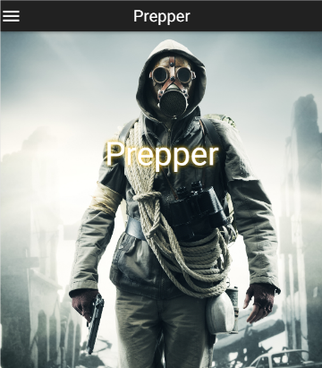

About
With a passion for building web apps using the most simple, short and clear code solutions, Paul is gaining experience with Angular.js and other technologies to become a top teir developer. Paul looks forward to merging his interests in travel, outdoor recreation, DIY and new technologies with web based solutions at every chance he can.
Skills
| Front End | Back End | Full Stack |
|---|---|---|
| HTML5/CSS | Node.js | Git | JavaScript | Ruby | TDD |
| Bootstrap | Express.js | P.P. | Angular.js | Rails | Teambuilding |
| JQuery | Sails | Heroku |
| AJAX | MongoDB | Mobile |
| Material | PostgreS | BCRYPT |
| UX | Sequelize | Writing |

Projects
Banners
Working for Cole & Weber and it's subsidiary, Hammerquist, I created lightweight banners for Hawaiian airlines with a variety of animations, images and sizes. Using "vanilla" JavaScript and Sprites, I was able to create total file size under 150kb for fast loading and cross-browser compatibility. As the sole technical person, I was able to readily explain the challanges that arose with the server managers, PMs and graphic designers.


Data Reporting System
Working with the Sr. Data architect at Cole and Weber, I created data intake, deduplication, business logic implementation and publishing procedures. Working closely with the marketing department to get the correct requirements, we used server side SQL, C# and MS Server Management Studio to create a fast reporting system pulling from nearly 100,000 rows of data.
Asteroids!

Inspired by childhood memories of the origional arcade asteroids game. This front end only site features very simple and clean code to make a little, two player game. Click the asteroid and keep it from destroying the planet!

There is no one place on the internet that features a plurality of expedition vehicles for sale. Overland It aggrigates expedition vehicles for sale from a variety of sites and hosts them on a mongoDB database using Node.js and Express.js as the app backend. Angular-Material is used as the front end library. The origional concept was to data scrape expedition vehicles from a few sources and aggrigate them on the site. However, the problem was a bit too big for the solution. There were no sites with more than two expedition vehicles on them so the data was manually added to the database.
PrepperPrepper
This moble responsive web app was created to help people be better prepared for emergencies. Users input where they live and are given a snyopsis of earthquake, civil unrest and flood danger for that area. They are given reccomendations for food, water and gun storage and can log in and get their prep score by inputing the number of meals, gallons of water, and guns they have. Paul worked as a developer and PM in a team of four developers to build this site. It is built in Node/express/bootrap with parallax scrolling. I'd like to improve the load time and number of cities available to select from.
GearSpoke

GearSpoke is a site where users can rent their outdoor gear to fellow users. There's no fee to sign up, you can pay the rental fee securly through the site and it only costs 10% of the rental to rent your equipment over the site.
As co-founder | CEO of GearSpoke, Paul learned while doing and was a major part in the development the site and it's community. With three technical developers and one designer, Paul created an easy to use, beautiful site while gaining the respect of his co-founders an mentors. After selling in 2014, Paul was determined to become an expert developer.